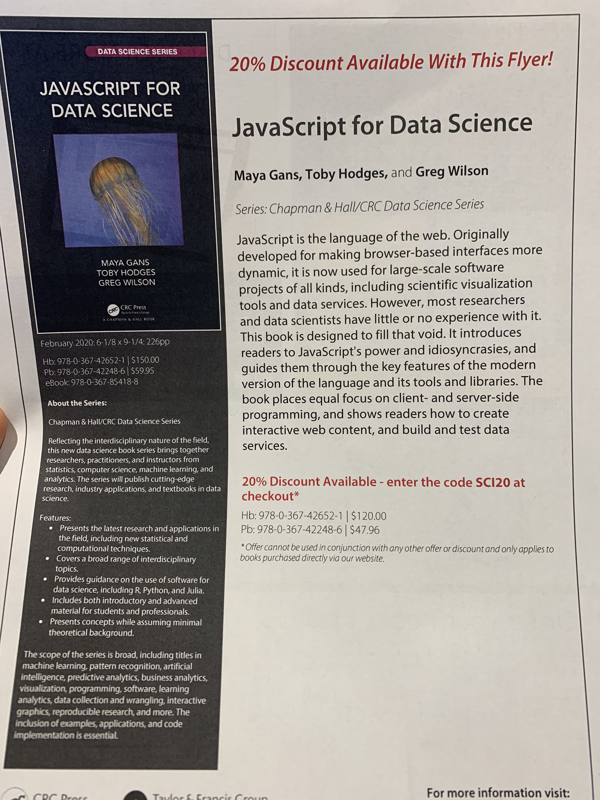

JavaScript for Data Science
We’re very pleased to announce that our book JavaScript for Data Science has now been published. You can purchase it through most online bookstores or directly from the publisher (where you will get 20% off if you use the promotional code in the flyer below), and all royalties go directly to R-Ladies. We’d be very grateful if you could help spread the word by posting online reviews or tweeting, and we always appreciate issues or pull requests in the book’s GitHub repo.
